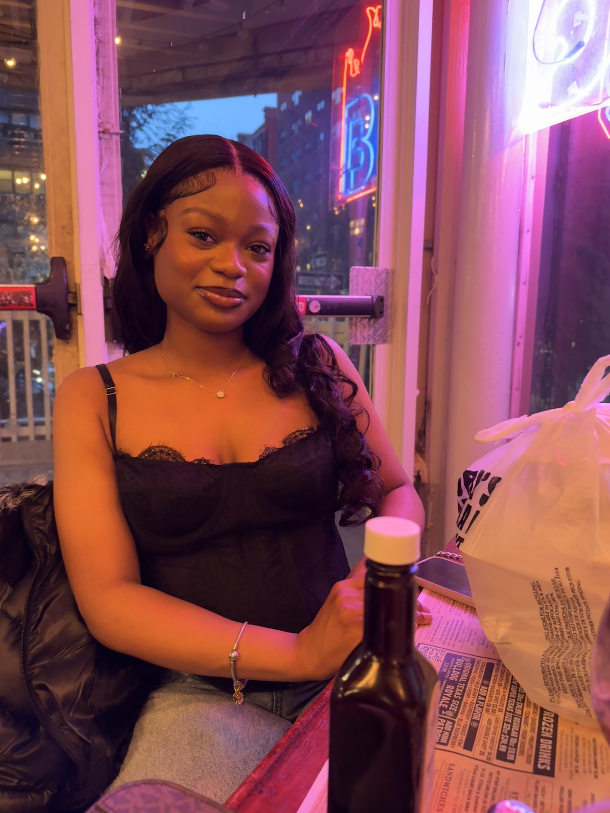

Britannia Mitchell's MEDPL 150 Portfolio
Creative Statement
My name is Britannia, and I am a second-year nursing student with aspirations of becoming a neonatal nurse practitioner and opening my own practice one day. While my path is rooted in science and healthcare, I’ve always had a love for creativity and expression. My favorite form of media art would be photography. Photography allows me to freeze a moment, which is why I love taking pictures as a way to look back at that particular moment in time. I would love to learn the professional side of things. I am also interested in documentaries and animation. I also do painting sometimes as a way of slowing things down when I’m anxious or overwhelmed.
Although I don’t have formal experience in media arts, I took a few visual arts classes in early high school. Those courses were more hands-on and physically focused on painting, drawing, and building projects from scratch. One of my favorite creations was a volcano I built and erupted during the online portion of school. I loved the freedom to be creative without the pressure of perfection. I see art as a means of escape without being confined to tight restrictions. I want my work to feel like a sense of peace and immediate happiness. I also intend for my work to reflect the human experience: imperfection and growth. I have no experience with using the editing software required for this class or the other apps; however, I am excited to learn, and maybe there is a career in art for me in the near future.

Reading Reflections
Go to Homework
Go to Oral Presentation